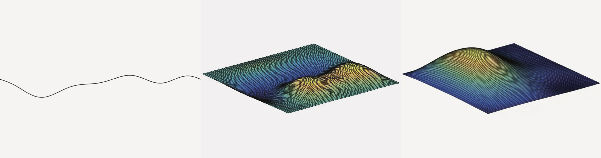

Research
Sound Synthesis for Computer Animation
I am actively involved in researching sound synthesis
algorithms designed for use in computer animation. Of particular interest at the moment are physical modeling techniques for sound synthesis.
Physical modeling sound synthesis is a numerical approach for generating mechanical vibration from mathematical descriptions
of acoustic systems. Compared to abstract methods of sound synthesis, such as additive, wavetable, and FM synthesis, physical
modeling synthesis appears to be superior for reproducing more accurate natural vibration and offering more intuitive user
control. In regards to accuracy, abstract digital synthesis produces sound that, while may be desirable for achieving a particular
aesthetic, is nonetheless unmistakably artificial. This may be due to the fact that abstract methods require the specification of
many control parameters which, if mismatched in any way with the waveforms they hope to reproduce, will create unnatural output.
Physical modeling methods, on the other hand, require fewer control parameters and thus may lead to more physically accurate sound.

Compositional Algorithms
I am currently working on a computer program to generate a continuous stream of Brownian position data for
real-time sonification and manipulation. In a model based on the equation of motion of an optically-ordered Brownian particle, the
composer could adjust the parameters of the Brownian audio effect by altering the physical parameters of the particle, the Brownian
trap, or the background fluid environment. Increasing the transverse irradiance gradient of the laser, for example, would make the
particle more likely to reside in the centermost sub-region and less likely to escape the trap. Such a change would increase the
stability of the lowest-frequency note and reduce the likelihood of higher-pitched, stochastic sequences. Increasing the fluid viscosity,
moreover, would slow the particle’s average velocity, effectively increasing the duration over which notes were played. Data-mapping
algorithms could also be incorporated into the model to manipulate the sampling rate and mapping areas in real time.